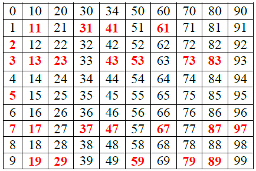
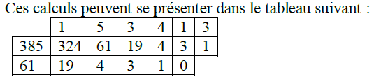
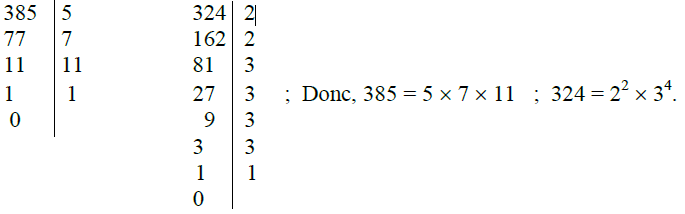

Arithmétique
I. Divisibilité dans Z
1) Définition
Soient a et b deux entiers relatifs, a est divisible par b (b∈Z*) si et seulement s’il existe un entier k
tel que : a = kb
2) Multiple, diviseur
Soient a et b deux entiers relatifs, les trois propositions suivantes sont équivalentes :
• a est divisible par b
• b est un diviseur de a
• a est un multiple de b
3) Propriétés
Soit a un entier relatif
• P1 l’opposé d’un multiple de a est un multiple de a
• P2 la somme de deux multiples de a est un multiple de a
• P3 la différence de deux multiples de a est un multiple de a
• P4 le produit d’un multiple de a par un entier relatif est un multiple de a
• P5 les diviseurs de a sont les diviseurs positifs et leurs opposés
4) Division euclidienne
Soient a et b deux entiers naturels, b étant non nul.
Il existe un seul entier naturel q et un seul entier naturel r tels que a = bq + r ; 0 ≤ r ≤ b,
q s’appelle le quotient de la division ; r le reste.
II. Nombres premiers
1) Définition
Un nombre premier est un entier naturel qui admet exactement deux diviseurs positifs 1 et lui-même.
Un nombre entier naturel qui n’est pas premier est dit composé.
Exemples
• 0 n’est pas premier : tout entier naturel non nul est diviseur de 0.
• 1 n’est pas premier, il admet un seul diviseur positif.
• 2 est le seul entier pair premier.
2) Propriétés
• P1 Il existe d’une infinité de nombres premiers
• P2 Décomposition primaire : tout entier naturel s’écrit de façon unique comme produit defacteurs premiers à l’ordre des facteurs près a = P1α1 × P2α2 × P3α3 ...Pnαn tels que pi premiers et αi entiers.
Exemple :
• 16 = 2 × 2 × 2 × 2 = 24.
• 35 = 51 × 71
• 180 = 2 × 2 × 3 × 3 × 5 = 22 × 32 × 51
3) Règle pratique
Pour étudier si un entier naturel a est premier on effectue sa division euclidienne par les nombres
premiers successifs jusqu’à ce que :
• soit le reste est nul auquel cas a est n’est pas premier ( et le nombre b correspondant à cette étape est le plus petit diviseur premiers de a.
• soit on arrive à un quotient q inférieur au diviseur b ( ce qui équivaut à b2 > a) sans avoir rencontré de reste nul, auquel cas on peut conclure que a est premier.
Le crible d’Ératosthène Permet d’obtenir aisément les nombres premiers dans l’ordre croissant.
Exemple :
Le crible d’Ératosthène (pour les 100 premiers entiers)

• P3 Soit a et b deux entiers naturels, b divise a si et seulement si tout diviseur premier de b se trouve dans la factorisation primaire de a avec un exposant au moins égal à celui qu’il a dans celle de b.
Exemple : 12 = 22 × 3 ; 72 = 23 × 32 ; 12 est un diviseur de 72.
III. Pgcd-ppcm
1) Définition
a et b désignent deux entiers naturels non nuls. On appelle plus grand commun diviseur de a et b et on note pgcd (a ; b) le plus grand entier naturel qui divise à la fois a et b.
On appelle plus petit commun multiple de a et b et on note ppcm(a ; b) le plus petit entier naturel non nul qui est à la fois multiple de a et multiple de b.
L’algorithme d’Euclide fournit une méthode pratique de recherche du pgcd de deux nombres.
Exemple : On veut déterminer par l’algorithme d’Euclide le pgcd de 324 et 385 :
• 385 = 324 × 1 + 61
• 324 = 61 × 5 + 19
• 61 = 19 × 3 + 4
• 19 = 4 × 4 + 3
• 4 = 3 × 1 + 1
• 3 = 1 × 3 + 0

Le dernier reste ≠0 obtenu dans les divisions successive étant 1on en déduit que pgcd(324 ;385 ) = 1.
(premiers entre eux). On peut également chercher le pgcd en décomposant :

Aucun facteur premier ne figure à la fois dans la décomposition de 385 et celle de 324.
2) Propriétés
• Les diviseurs communs à deux entiers naturels sont les diviseurs de leurs pgcd,
• Les multiples communs à deux entiers naturels sont les multiples de leurs ppcm,
• Le produit de deux entiers naturels est égal au produit de leur pgcd par leur ppcm.
IV. Entiers premiers entre eux
1) Définition
Deux entiers relatifs sont premiers entre eux si et seulement si leur seul diviseur commun positif est 1.
2) Théorème de Bézout
Deux entiers relatifs a et b sont premiers entre eux si et seulement s’il existe deux entiers relatifs u
et v tels que : au + bv = 1.
3) Théorème de Gauss
a, b et c désignent des entiers relatifs. Si c divise le produit ab et si a et c sont premiers entre eux, alors c divise b.
V. Congruences dans Z
n désigne un entier naturel supérieur ou égal à 2, a et b sont deux entiers relatifs.
1) Définition
On dit que a et b sont congrus modulo n et l’on note a ≡ b (n) lorsque a – b est un multiple de n.
2) Propriétés caractéristiques
a et b sont congrus modulo n si et seulement si a et b ont le même reste dans la division euclidienne par n.
2) Compatibilité avec les opérations
n désigne un entier naturel supérieur ou égal à 2, a, a’, b et b’ sont des entiers relatifs.
Si a ≡ a’ (n) et b ≡ b’ (n), alors
• a + b ≡ a’ + b’ (n)
• a - b ≡ a’ - b’ (n)
• ab ≡ a’b’ (n)
Pour tout k de N* ak ≡ a’k (n).
3) Applications aux critères de divisibilité x : désigne un entier naturel dont l’écriture en base décimal est x = anan-1 ...a0 (les ai étant ses n + 1 chiffres)
• x ≡ an + an-1 + …+ a1 + a0 (9) ; on en déduit que x est divisible par 9 si et seulement si la somme des chiffres est divisible par 9.
• x ≡ an + an-1 + …+ a1 + a0 (3) ; on en déduit que x est divisible par 3 si et seulement si la somme des chiffres est divisible par 3.
• x ≡ a0 (2) ; x est divisible par 2 si et seulement si son chiffre unité est pair.
• x ≡ a0 (5) ; x est divisible par 5 si et seulement si son chiffre unité est 0 ou 5.
• x ≡ a1a0 (4) ; x est divisible par 4 si et seulement si le nombre formé par ses deux derniers chiffres est divisible par 4.
• x ≡ a1a0 (25) ; x est divisible par 25 si et seulement si le nombre formé par ses deux derniers chiffres est divisible par 25.
• 10 ≡ -1 (11) ; 100 ≡ 1 (11) ; 1000 ≡ 1 (11) …
a ̅
• x est divisible par 11 si et seulement si la différence des sommes de ses chiffres de rangs pairs et impairs est divisible par 11.